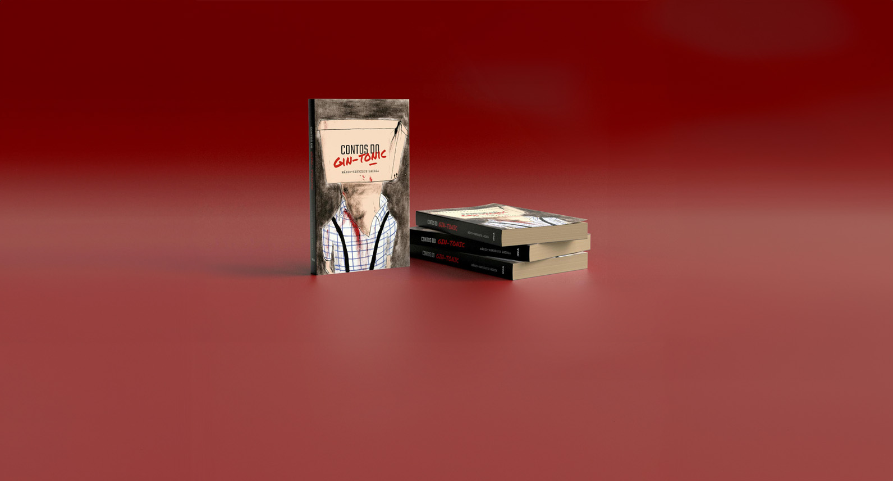
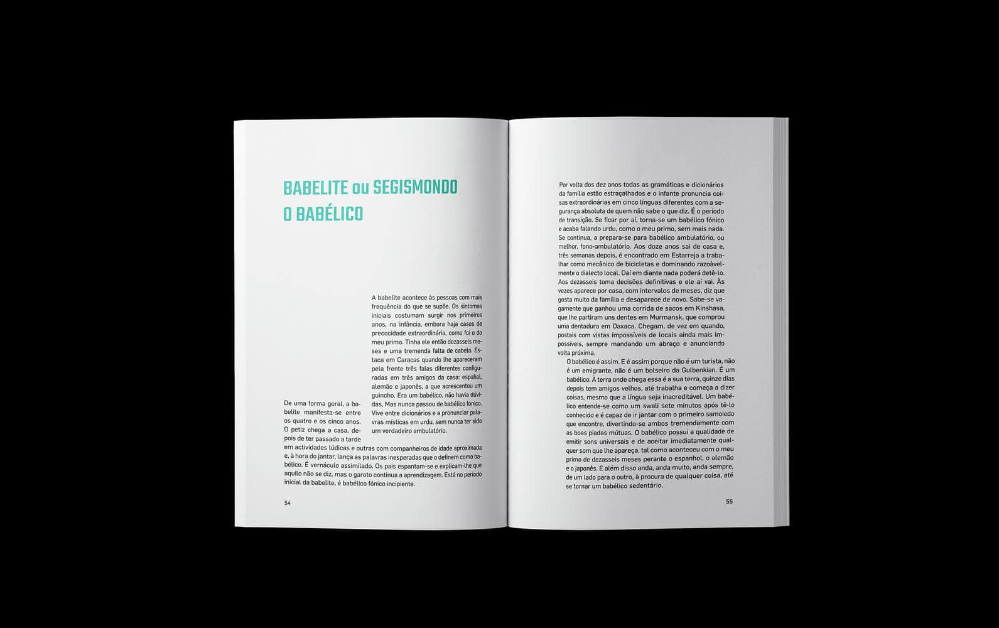
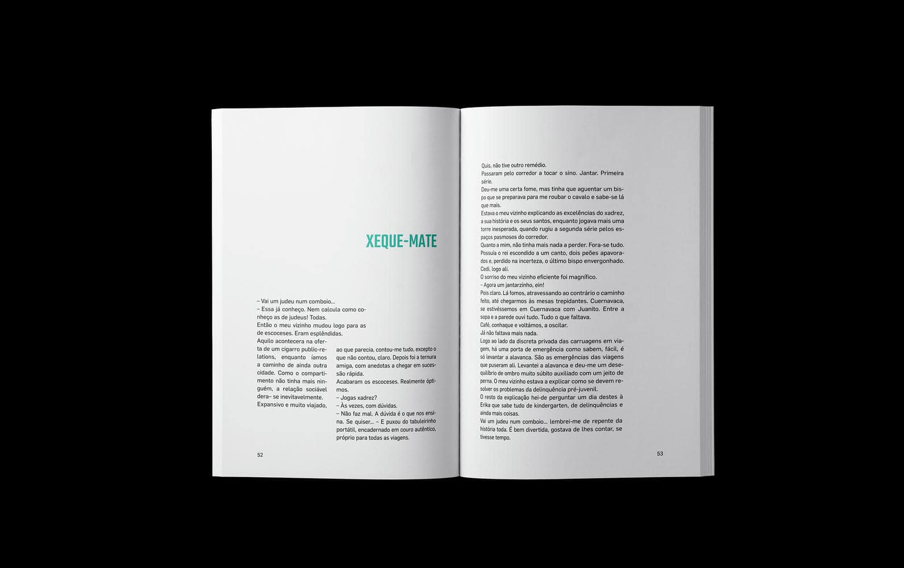
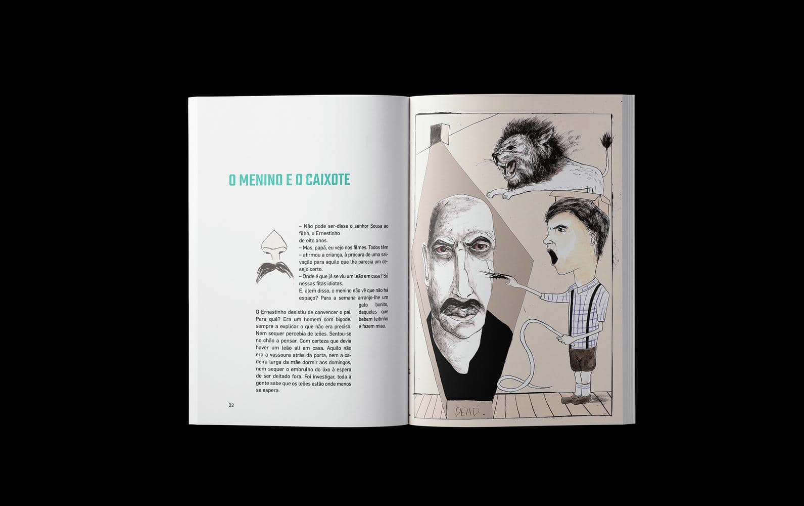
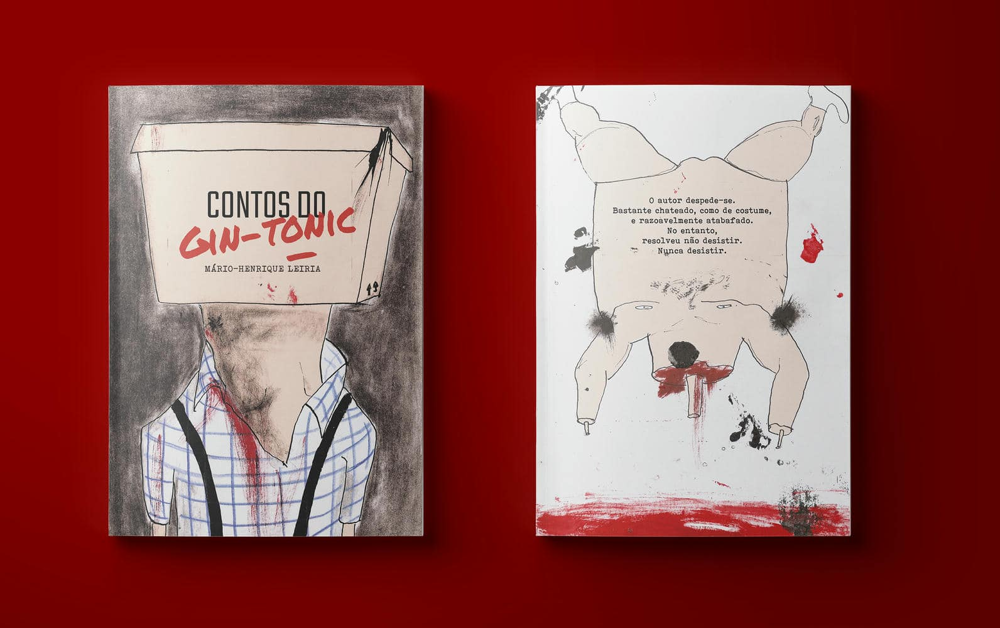
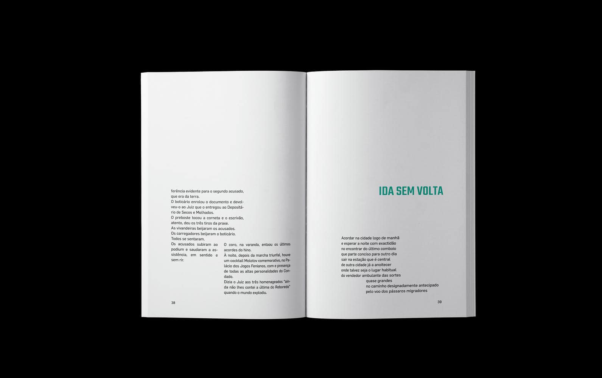
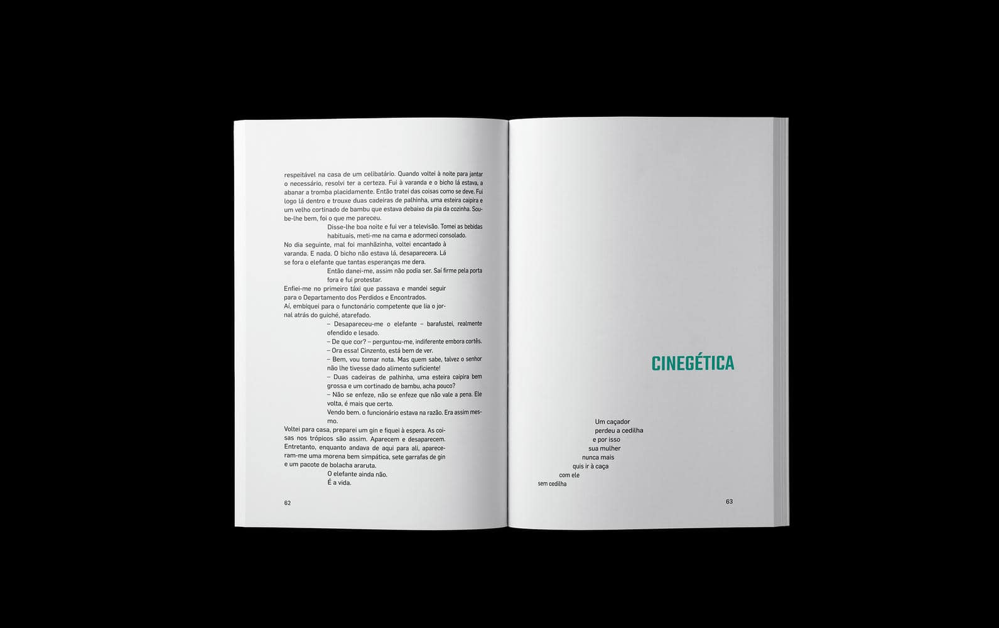

The Gin-Tonic
Tales
Editorial
Illustration
This project involved the pagination, illustration of one of the tales and the cover design of the book The Gin-Tonic Tales, an emblematic work of surrealist literature.


➔
Starting from the fragmentary and provocative nature of the text, we opted for a postmodernist-inspired grid, which reflects the formal freedom of the narrative. The illustrations were developed to dialogue with the absurd and symbolic tone of the writing, reinforcing the visual universe that the work proposes.


The grid structure was designed to challenge linear reading, reflecting the deconstructive nature of the text. Typography, spacing and visual rhythm were carefully explored to create a reading experience consistent with the surrealist universe of the work.
➔


Curious to see what we can create together?
Send a message to open doors to your brand!